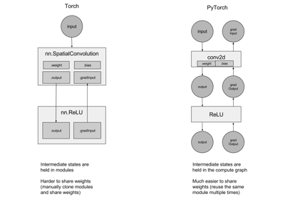

PyTorch for Former Torch Users¶
Author: Soumith Chintala
In this tutorial, you will learn the following:
- Using torch Tensors, and important difference against (Lua)Torch
- Using the autograd package
- Building neural networks
- Building a ConvNet
- Building a Recurrent Net
- Use multiple GPUs


